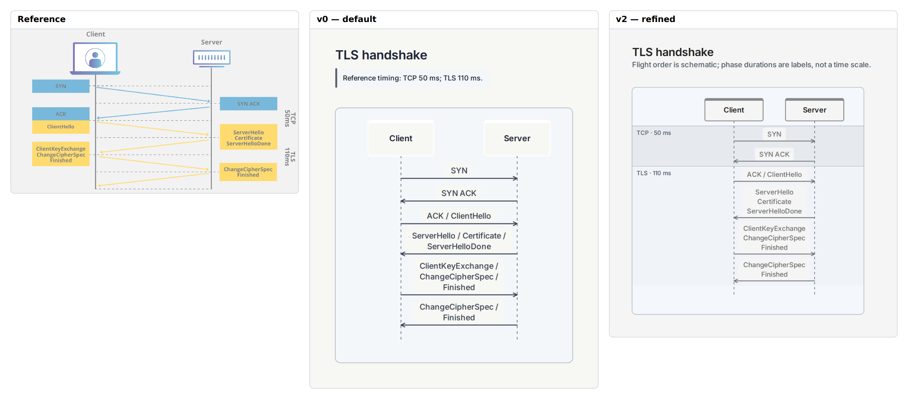
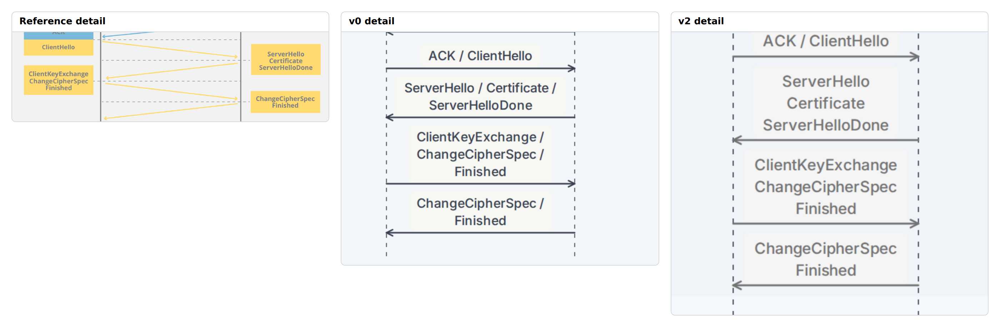

E01 · Cloudflare
TLS handshake: TCP and TLS message flights

Quality 4/5Fidelity 3/5Semantics 4/5v2 15 lines · 0 pins
Default readability: comparable. The default has stronger text contrast and a conventional top-to-bottom message order. The reference is quicker at separating TCP from TLS and showing transit time. Those gains and losses balance for reading the message names, but not for temporal fidelity.
No sloped or time-proportional message flight. ACK/ClientHello straddles a semantic phase boundary that the native single message row cannot color separately.
Detail view · TLS message bundles and phase/timing boundary

